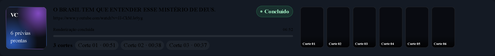
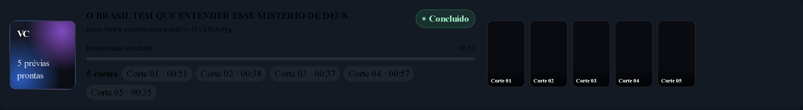

Medido no navegador, contra o painel real, com a pasta output/
de verdade: 6 arquivos .mp4 — os 5 do clips.json e 1 órfão de uma
execução anterior do mesmo vídeo — e 5 pôsteres .jpg.
O resumo diz 3 cortes e a tira mostra 6 figuras. O órfão entra como "Corte 05" e empurra o clipe 5 de verdade para "Corte 06".

| Onde | Valor | Fonte |
|---|---|---|
| Resumo | 3 cortes | job.clips, truncado por clips[:3] no servidor |
| Tira | 6 figuras | varredura de output/ (/api/saida), sem teto |
| Pôster | 6 prévias prontas | a mesma varredura |
Os três contadores saem da mesma lista — a lista de clipes da execução — e o órfão não entra na tira.

Consertar só a contagem no servidor deixaria a tira contradizendo o resumo — medido, não suposto.
| Cenário | Resumo | Figuras | Órfão na tira |
|---|---|---|---|
index.js do HEAD + recorte de 3 |
3 cortes | 6 | sim |
index.js do HEAD + lista completa |
5 cortes | 6 | sim |
index.js novo + lista completa |
5 cortes | 5 | não |
Commit e4d940c — web/server.py,
web/index.js, tests/test_web_server.py.
Suíte: 539 testes + 680 subtestes, sem falhas novas.
Capturas geradas por Playwright contra o painel em 127.0.0.1:7755.